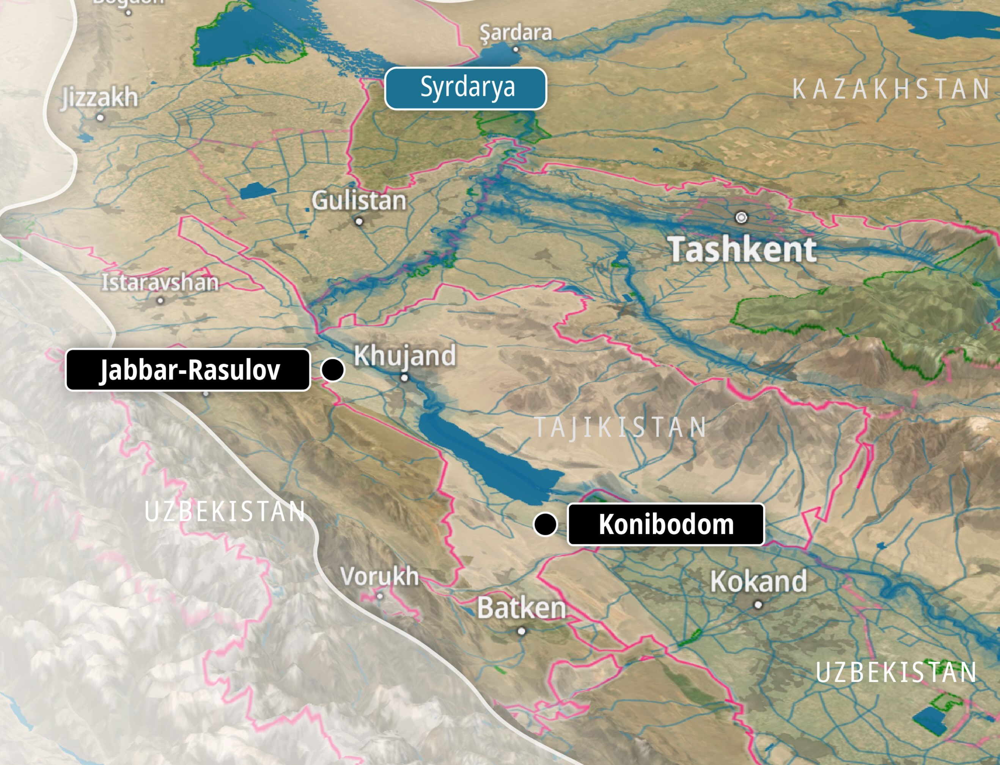
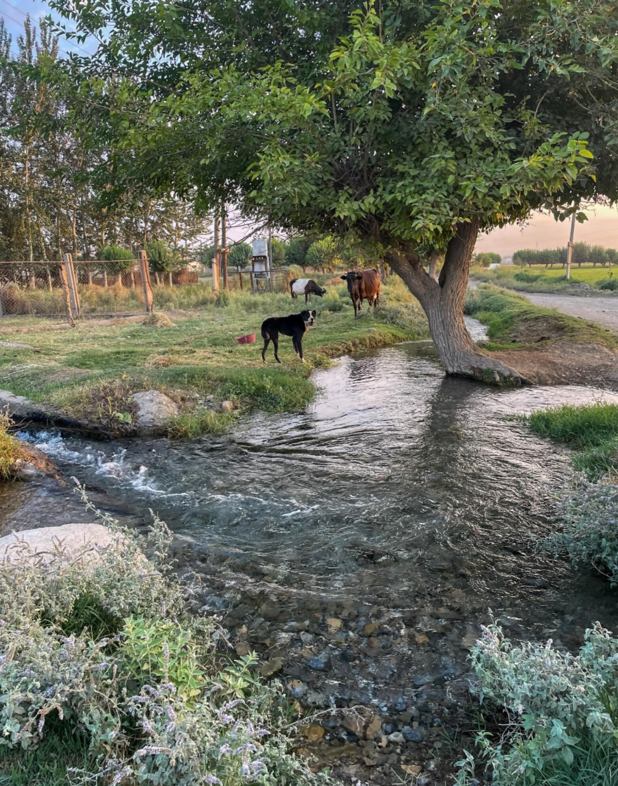
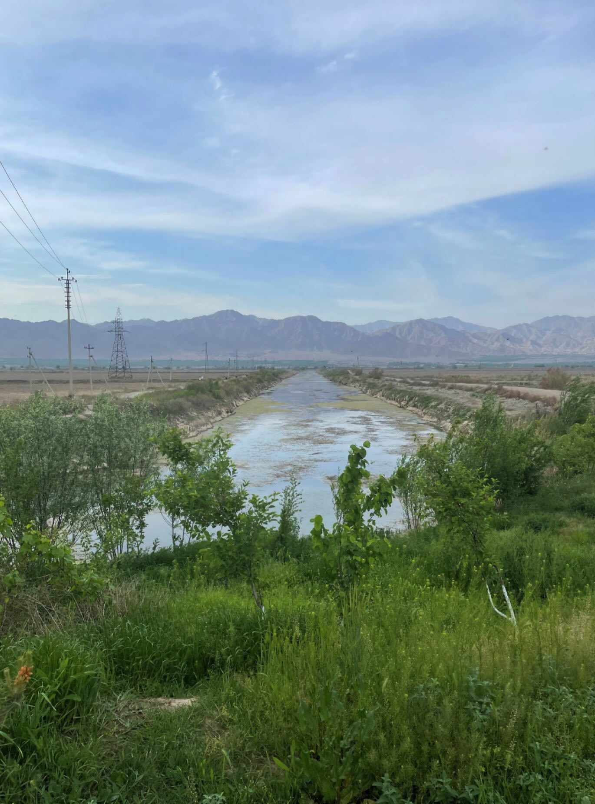
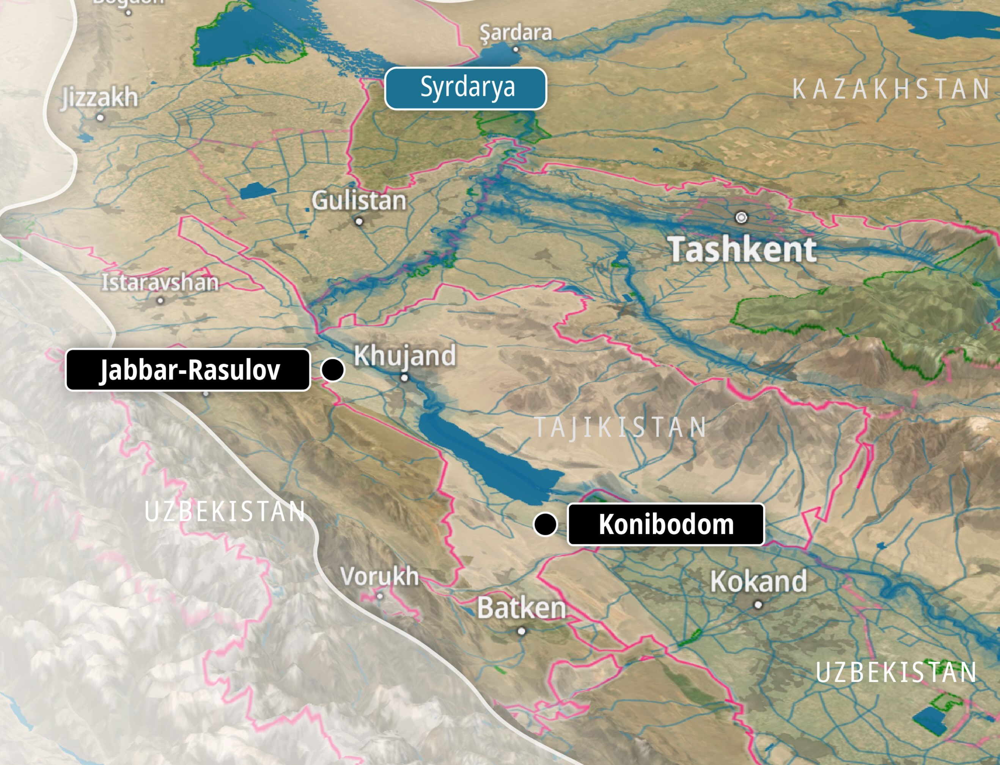
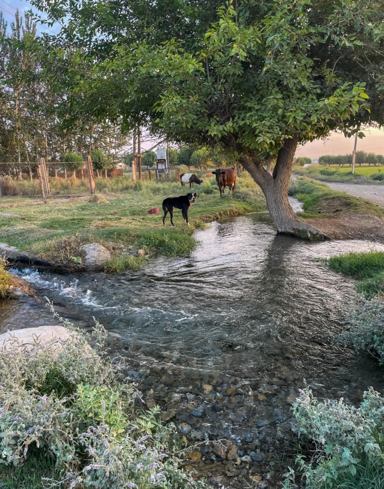
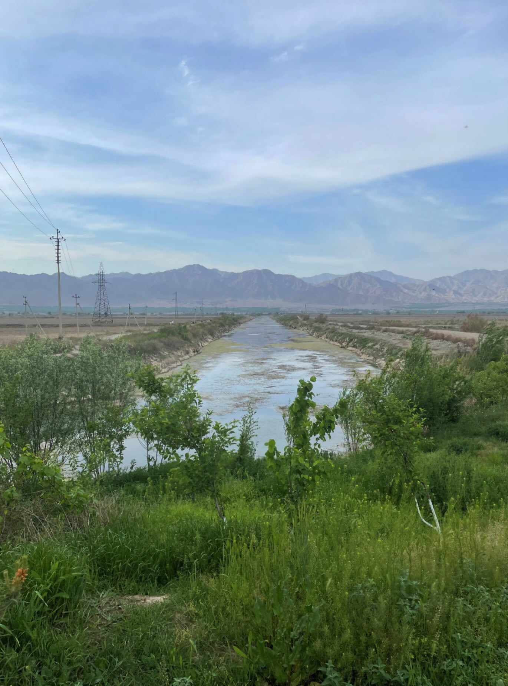
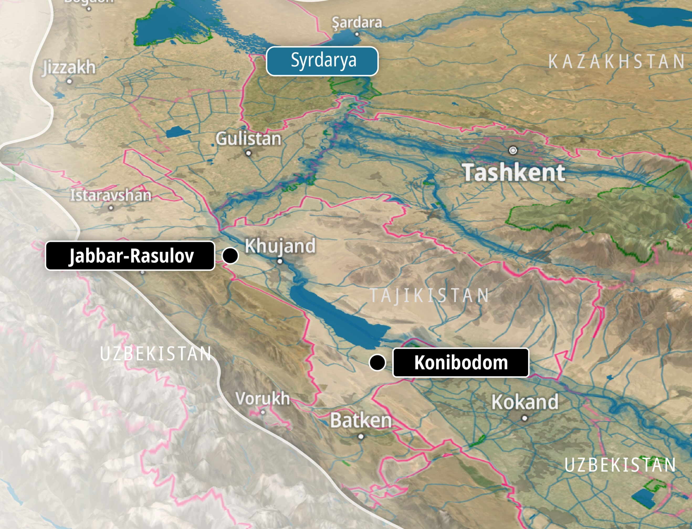
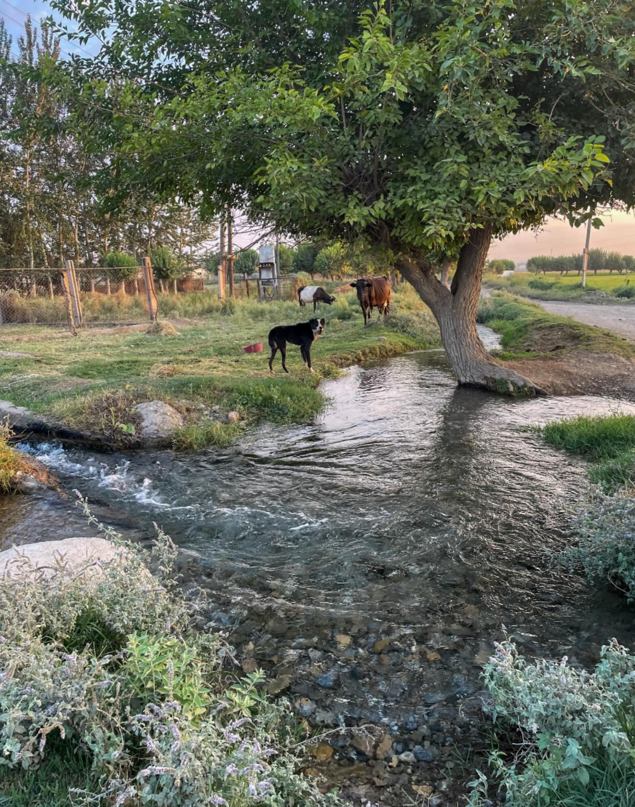
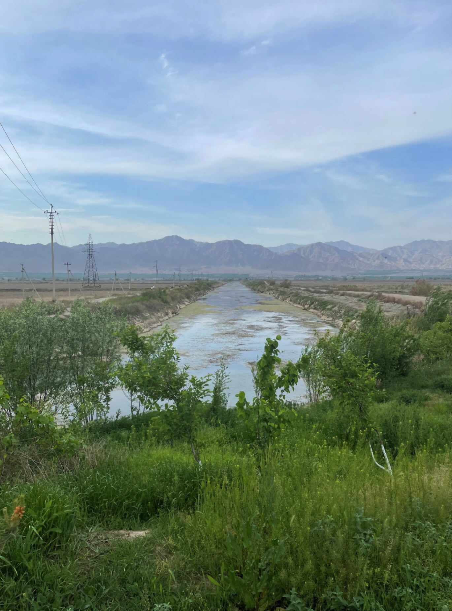
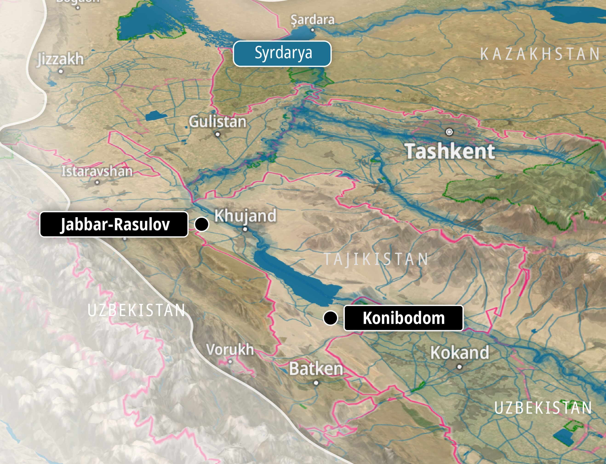
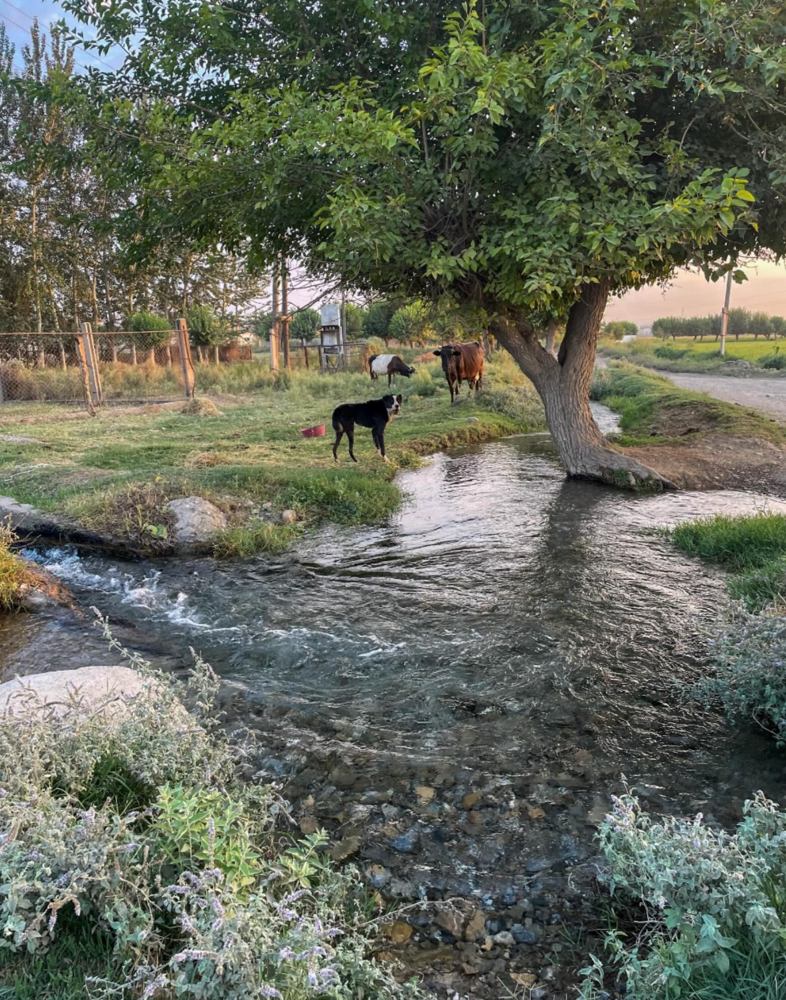
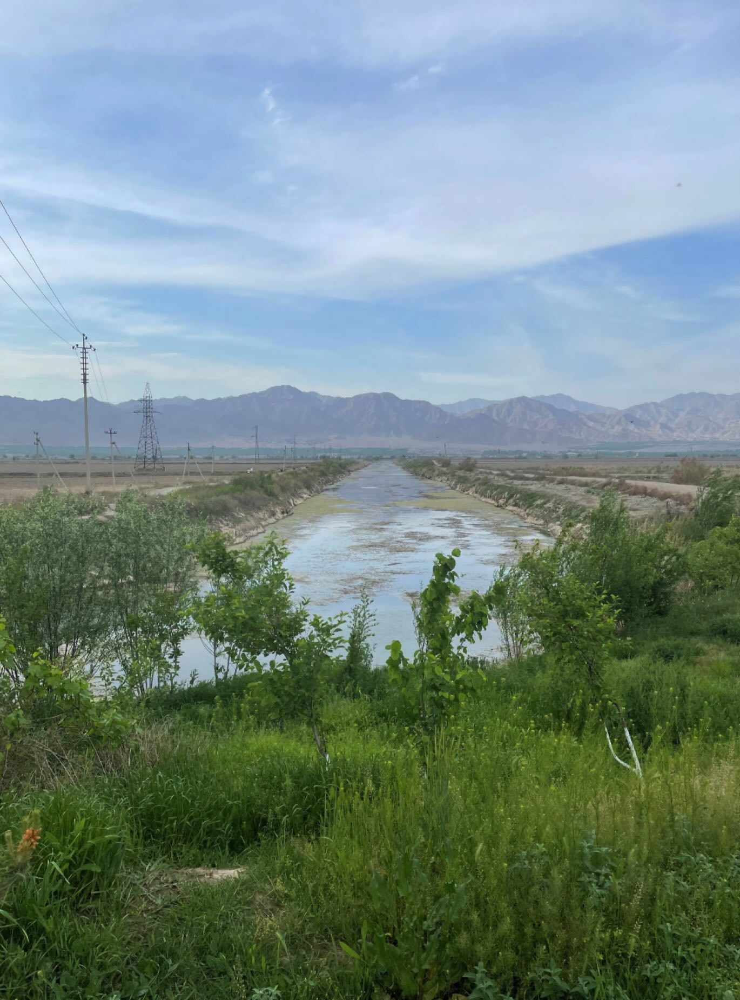
In Central Asia (referring to Kazakhstan, Kyrgyzstan, Tajikistan, Turkmenistan, and Uzbekistan), the issue of water scarcity has recently emerged as a critical concern in academic and public discourse and is increasingly recognised as a driver of socio-political tension and regional instability. Particularly in the Fergana Valley (here, referring to Kyrgyzstan, Tajikistan, and Uzbekistan), the growing imbalance between water demand and supply, the inefficiency of irrigation systems, and competing sectoral needs have intensified local and transboundary disputes over shared water resources (Hermans et al., 2024).
The pressures have accordingly intensified due to increasing temperatures, glacier retreat, and a higher frequency of droughts, especially in the summer when water demand is highest. In the valley's rural areas, where agriculture relies significantly on irrigation, fluctuations and uncertainties in water supply pose risks to food security and the livelihoods of local communities during the cropping season. Furthermore, the scarcity of water and limited access to clean drinking water are often primarily linked to geographical and climatic conditions, with political and economic factors further compounding the issue.
In addition to this, institutional rigidity (ibid.) reflects deeper structural constraints linked to the political economy of irrigated agriculture in the region, as also observed in case studies during the 2023 and 2024 field trips. According to the farmers from Tajikistan’s Jabbor Rasulov district (former Proletarsk), approximately 60% of irrigated land continues to be dedicated to cotton cultivation—an ongoing legacy from the Soviet-era planned economy, where cotton was promoted as a strategic monoculture crop. The priority placed on cotton planting reinforces the hierarchical nature of water allocation by favouring crops that align with state interests rather than supporting diversified, farmer-led agricultural practices.
The priority placed on cotton planting reinforces the hierarchical nature of water allocation by favouring crops that align with state interests rather than supporting diversified, farmer-led agricultural practices.
These contextual settings include the geographic diversity of Central Asia, which is characterised by extensive mountain ranges, plentiful freshwater sources, steppes, and arid regions; this has led to different projections when it comes to water scarcity. Although Tajikistan is often presented as a water-rich country due to its substantial glacier-fed river systems and significant hydropower potential (both of which are central to national development strategies), its abundance is unevenly distributed. The Sughd region, located in the northern part of the country, is the only area that depends primarily on transboundary water sources, positioning it as a downstream area. Notably, just 21% of its water supply is derived from rainfall (Wegerich et al., 2013). The contradiction illustrates the spatial differences in water access between national water abundance and regional vulnerability in the area that hosts more than half of Tajikistan’s irrigated agricultural land. The main river contributing to irrigation in this area is the Syr Darya, which spans 195 kilometres in the Sughd region. Its primary tributary rivers, Isfara, Khodja Bakirgan, Isfana, and Aksu, originate from the Turkestan Range. Together, their waters are used for hydropower production in the Bakhri Tojik water reservoir (formerly Kairakkum dam), along with the Big Fergana Canal (BFC), North Fergana Canal (NFC), and Khodja Bakirgan Canal (KBC).
The water users in the Konibodom area's water user association (WUA) Iram-2014 consume water from the Big Fergana Canal (BFC) on the border with Besharyk, Uzbekistan. 12 In Konibodom, water is primarily diverted from the Syr-Darya and Isfara rivers into the Big Fergana Canal (BFC), which supplies irrigation to nearly 13,000 farms 2 . The 270-kilometre BFC, constructed in 1939, begins at the Naryn and later Karadarya rivers and obtains water from multiple tributaries that cross the national boundaries of both Central Asian countries along the route (Wegerich et al., 2013). The local population of approximately 55,000 residents is predominantly Uzbek- and Tajik-speaking, with Kyrgyz communities residing near Khistevarz along the route to Konibodom.
The Big Fergana Canal traverses both Uzbek and Tajik territories, with the Isfara River being the final tributary that contributes to its course. This arrangement results in a portion of the Isfara River’s flow returning to Tajikistan via a canal that passes through a neighbouring country, underscoring the river’s transboundary nature and the interdependent dynamics of water management across national borders (Pak et al., 2014). During one of our visits to the Vodkhoz of Konibodom, instances of water scarcity in this area were reported from the start of the vegetation season through mid-April, with the overall water delivery rate of 5–6 m³/second falling to nearly one-third of the actual demand throughout the cropping season. In response, farms have increasingly turned to groundwater extraction, with over 400 registered wells in operation as of 2022.
Our second case study explores water management practices by the Water User Association, Ona Nodirboboeva, in the Jabbor Rasulov district, formerly known as Proletarsk. Approximately a third of the cultivable area in Jabbor Rasulov is in the tail part of the Khoja-Bakirgan canal and relies on three-level pumping stations to obtain water from the Syr-Darya River. The Khoja Bakirgan (formerly known as Guliakandoz) canal draws water from the Khoja Bakirgan River using a dammed hydraulic construction for intake (Mirzaev et al., 2017). The river starts on the northern slope of the Turkestan Range in Tajikistan, where snow and glaciers feed it. Then it enters the Leylek District of Batken Province in the Kyrgyz Republic, located near the southern border with Tajikistan. This river then flows into the Fergana Valley and eventually joins the Big Fergana Canal. The overall length of the Khoja Bakirgan canal measures 30.4 km, with 20.4 km being inside the Jabbor Rasulov district (ibid.). The Isfana River sub-basin also flows through the Jabbor Rasulov District and the southern Leylek to the west of the Khoja-Bakirgan River. During periods of high-water flow, the Isfana flows into the Syr Darya.
As explained to us by our interlocutors, this part of the Fergana Valley faces a shortage of cultivable land due to high population density and the prevalence of ridges and mountainous terrain. For instance, the foothill and lowland areas of the Jabbor Rasulov district are among the most densely populated, with approximately 2 This and the following statistical data are drawn from Tajikistan’s Strategic Development Plan for 2016–2020, city of Konibodom and Jabbor Rasulov district 13 150,000 residents across 1,620 farms cultivating around 13,000 hectares of irrigated land. Notably, over 80% of the farming population in this area is Uzbek-speaking. Moreover, irrigation in the higher-elevation zones relies primarily on pumping stations, which are often inefficient due to ageing infrastructure and long-standing, unresolved issues related to maintenance and repair. These technical shortcomings further exacerbate the challenges of agricultural production in an already resource-constrained environment. With only three out of eight pumping stations operational and reported fluctuations in surface water availability from the Khoja Bakirgan and Magistralniy Canals (particularly during early spring, March to mid-April, and again in June), the majority of farmers have increasingly come to rely on groundwater wells. According to official statistics, 522 such wells were in use as of 2022.